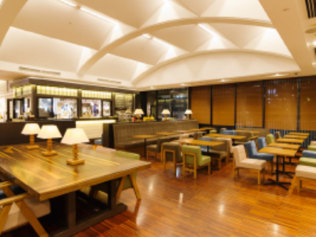
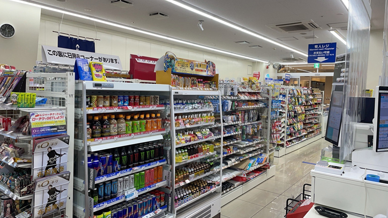
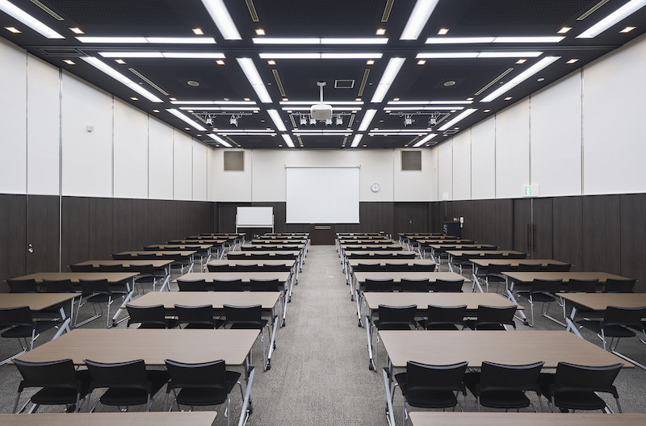
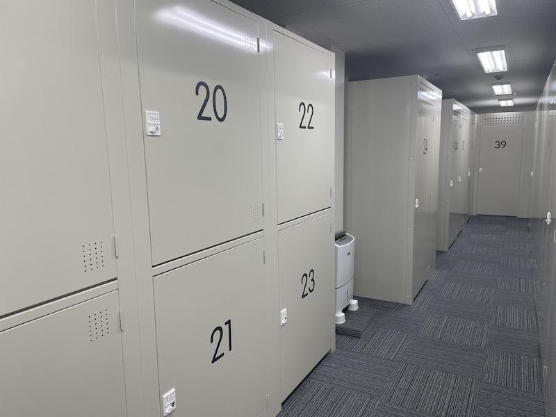
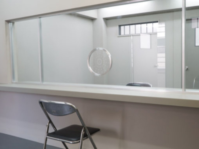
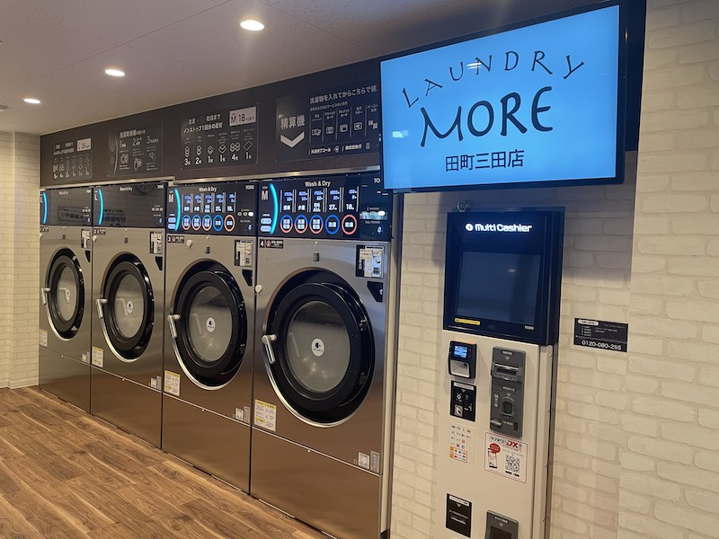
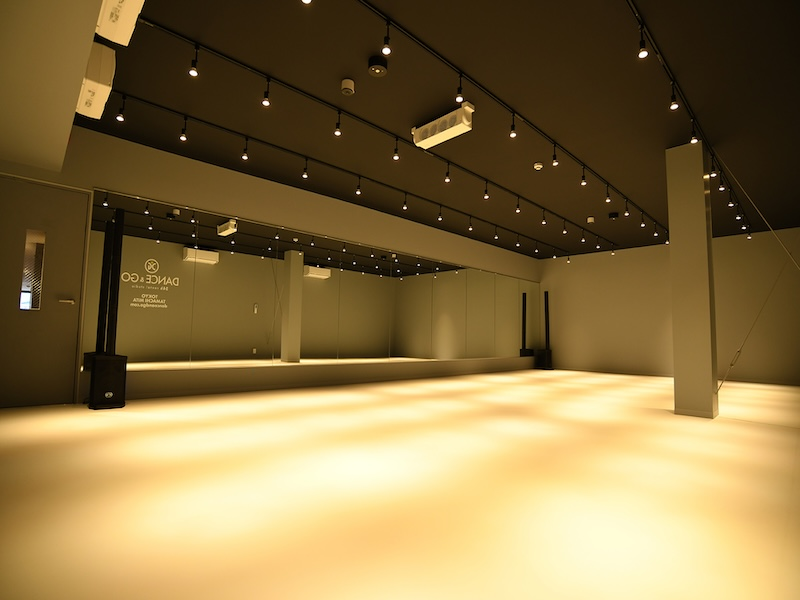
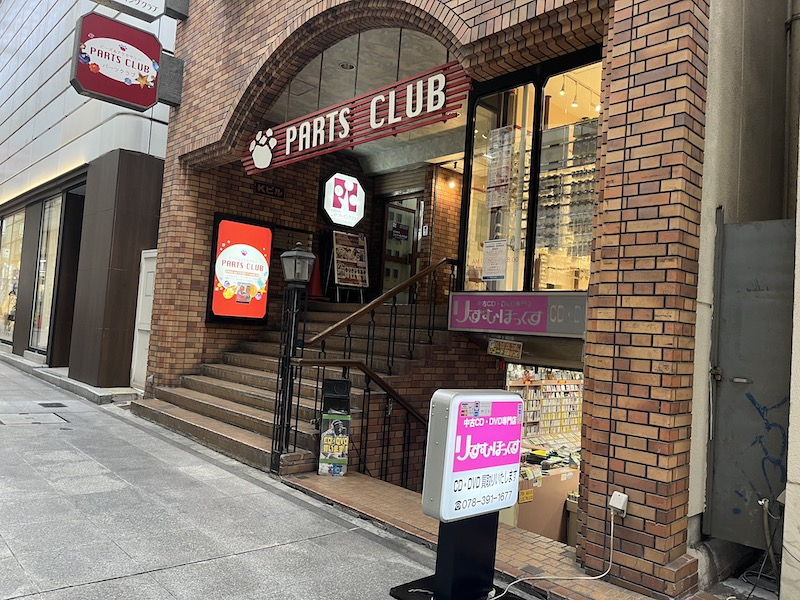

事業案内
世の中が求めるビジネスビジョンを徹底的に把握し、最適なソリューションを提案します。
その根底にあるのは、常に新しい価値を見いだそうとする姿勢。
創意と工夫こそが、私達に不可欠な要素です。

3店舗の運営をしており、それぞれコンセプトが異なります。
当初、出店のきっかけはそのビルテナントの食堂・打ち合わせスペースとしての機能を満たす為でしたが、周辺企業や住民のコミュニティの場として認められ、地域の賑わいの空間として地域に貢献しています。

生活をする上でなくてはならないコンビニエンスストアを、オフィス街や駅周辺で営業することにより、その店舗周辺をより利便性の高いエリアへと価値を向上させることが可能です。 例え、小さなスペースであっても、オーナー様や地域に対して、大きな効果が生まれます。

周囲のオフィスで働く人にとっては、好きな時に必要なだけ借りることができるスペースが存在するということ。それと同時にオーナー様にとっては、テナントに対するサービス面での価値向上と、地域貢献という視点からも非常に有意義なものであると考えています。

ビルオーナー様に空室を有効に活用していただくため、セルフストレージの運営も展開しています。ビルの新規開発や建て替えまでの限られたスパンを利用した、空室の暫定的な活用に適しています。新しい時代のスマートライフとして利用者へ24時間、いつでも自由に使える収納スペースを提供しています。

ドラマや映画、雑誌に不可欠なのが、具体的なシチュエーションにおける撮影です。空きビルに撮影用のセット・備品を配置し撮影所としてテレビ局や製作プロダクションへ貸し出しています。撮影箇所として一般消費者に認知されることになれば、物件にとって非常に大きな宣伝効果を生み出します。それは不動産価値の向上にもつながります。新しい切り口の価値向上策です。

共働き家庭が増えたことによる家事時短ニーズ、ダニや花粉症などアレルギー対策といった清潔に対する価値観の変化により、洗濯に求めるものが従来の「ただ洗えればいい」といった考え方から変化しています。１時間ほどで洗濯から乾燥まで終了し、布団や毛布など大きな洗濯物も洗え、高温殺菌によるふっくら気持ちのよい仕上がり。新しいニーズにお応えすることで、お客さまの生活の一部として、豊かな生活時間の創出を提供していきます。

オリンピック種目にもなったブレイクダンスを始め、日本におけるダンスの競技人口は、年々増加しています。その一方、練習をするためのダンススタジオは需要に供給が追い付いていないため、新たな活動の場を提供するべく、私たちは無人のダンススタジオを運営しております。もちろん、バレエやヨガ、演劇、フィットネスなどダンス以外の用途での利用も可能ですので、地域のコミュティーの場としての役割も期待できます。

東京都に2物件（港区三田・中央区日本橋）兵庫県に１物件（神戸市中央区）を所有し、地域の特性にあったテナントを誘致し、賃貸運営を行っています。